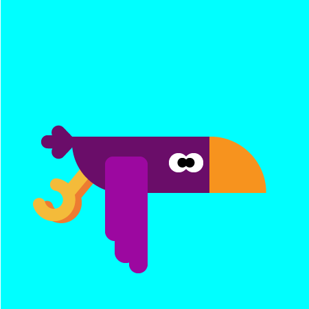
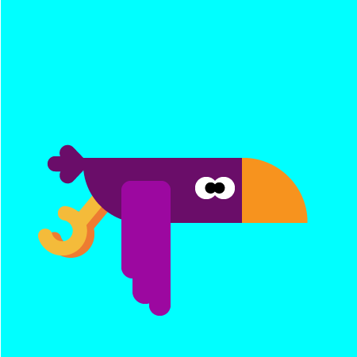

I'm currently studying my dream career which is Graphic Design, at Seminole State College. I have moderate knowledge because I have only worked on school projects and a few personal projects for family events like birthday invitations therefore during my career years I will acquire all the knowledge I can to have more understanding.
My Software and Hardware knowledge are:
Here is some of my work
For more check my gallery.